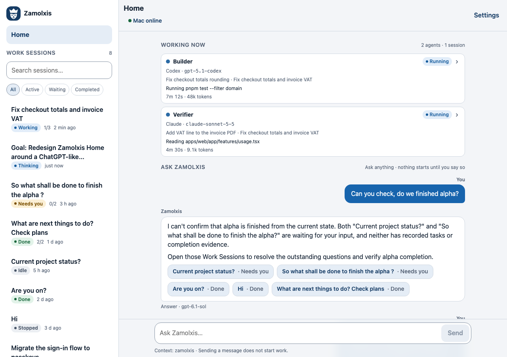
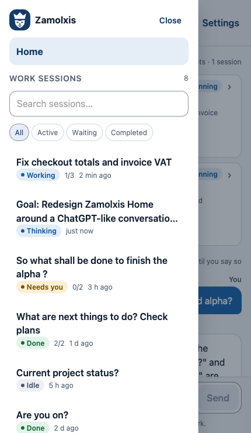
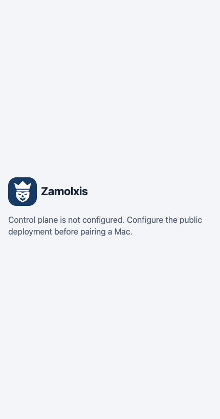

Zamolxis · The crowned ruler
A three-point crown, commanding brow and sculpted beard. Original vector artwork inspired by a divine ruler; a design candidate awaiting owner review.
Browser and installation assets
favicon 16
favicon 32
Apple
maskable
Compact face below 40 px. Installation artwork has extra clear space for platform masks. The existing application palette is preserved.
Actual product placements
Local screenshots of the app: desktop navigation, phone navigation drawer and the access gate. Fixture data is used for authenticated screens.
Desktop · 1280 px

Phone navigation
Access gate · 56 px mark